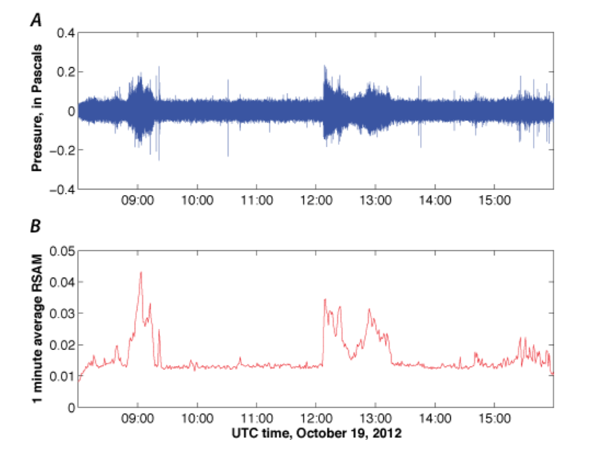

About Me
I'm Jenn Cooper, a Madison & Lila Self Graduate Fellow in astrophysics at the University of Kansas.
I work on the evolution of galaxies in clusters with the EDisCS collaboration and am supervised by Dr. Gregory Rudnick. Currently,
I am investigating the nature vs. nurture scenario for the evolution of galaxies that are in clusters and in the field.
Primary observations include WFC3 & grism on Hubble and Magellan at Las Campanas. grism data reduction is completed with
grizli, developed by Gabriel Brammer.
I'm also the Vice President of the Association of Polar Early Career Scientists (APECS)
and on the Board of the US National Committee, USAPECS,
both of which aim to continue growing and providing opportunities for polar ECRs around the globe through
capacity building, being on the cutting edge of information assessment, and education and outreach. Within astronomy, I am
on the Steering Committee for Astronomy & Astrophysics from Antarctica SCAR AAA,
which brings together astronomical activities in Antarctica in a way that ensures the best possible outcomes from international
investment in Antarctic astronomy, and maximizes the opportunities for productive interaction with other disciplines.
Previous Research
Image Processing
During my master's thesis, I worked on variations in image processing between the commonly used MultiDrizzle and SelfCal, which models and removes zodiacal light in each frame. The area of interest was the Ultra Deep Field in the GOODS-S region of CANDELS. SourceExtractor dropout identification of z 4 - 8 galaxies from both maps revealed a significant mismatch of sources. I was supervised by Dr. Asantha Cooray and Dr. Hooshang Nayerri for this project.
Volcano Geophysics
I spent 4 months in 2012 at the USGS Hawaiian Volcano Observatory working on the installation of the first infrasound array on the Big
Island of Hawai'i. Infrasound detects pressure waves in air, much like seismometers detect waves traveling through the ground from
sources such as earthquakes. With volcanic activity, infrasound can be crucial to detecting above-ground explosion events, especially
in areas that are obscured or difficult to access. Infrasonic activity on the Big Island was correlated with other measurement techniques
including seismic, thermal, and optical observations. I was supervised by Weston Thelen, who is now at USGS-CVO.

In 2015, I traveled to Chile as a part of course directed by Jeffrey Johnson of Boise State University where seismic and infrasound
stations were installed and updated as a part of monitoring initiative of Villarica. Recent volcanic activity limited fieldwork and the
course focused on signal processing.
For 2 months in 2013, I worked at the Universidad de Colima monitoring the active Volcan de Colima. Due to the remote nature and
difficulty accessing the region, observations were limited to a sparse seismic network, thermal (FTIR), and optical imaging from
helicopter overflights. The lab is managed by Nick Varley.
For my undergraduate thesis, I studied 100+ volcanoes with satelitte imagery in a method known as Interferometric Synthetic Aperture
Radar (InSAR). InSAR works by repeatedly imaging the same region in radio frequencies; when two images are subtracted, any difference
in the Earth's surface, such as from excavation or a landslide is registered as a phase difference. When looking at volcanoes, this
phase difference is crucial for deformation, which can indicate movement of magma below the surface or an eruption. For locations such as
the Kuriles or the Marianas where physically accessing them is nearly impossible, satellite monitoring allows for a delayed assessment
of the volcanic activity. Observations from ALOS (JSA), ERS, RADARSAT were used in this study. I was supervised by Matthew Pritchard.
CV
Teaching Experience
While completing my Master's at Cal State Los Angeles, I was a Teaching Associate for more than 150 students for the Astronomy Laboratory section.
Fall 2015: Teaching Assistant Astro 152
Spring 2017: Teaching Assistant Astro 152
Winter 2016 - Spring 2017: Teaching Associate Astro 152
Outreach & Professional Service
I have been a member of the APECS Council since 2015, which serves as a network for early career researchers in the polar
and wider crysophere communities. While completing my undergraduate thesis on a global study of volcanoes, I often dealt with
the effects of high altitude, snow, and ice sheets in my satellite imagery. Somewhere along the way, I stumbled across APECS,
which has been a great community to learn and engage with. Even though I am now focused on astronomy, there are still numerous
obervatories and projects that use Antartica as a base for operations and I remain involved in the polar community through SCAR
AAA.
While on the APECS Council, I have worked on a number of projects and tasks including:
- IASC Fellowship Review
- APECS Mentor Award Selection Committee
- 2015-2016 APECS Final Report
- Organizing Council Meetings
- Polar Week Project Group Advisor
- Writing guides for leadership positions
- Interviewing potential Council candidates
- AGU Fall Meeting Career Panel with USAPECS